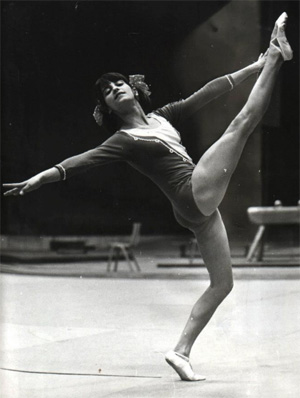

Nadia Chatarova (BUL)
1977 University Games AA Bronze Medalist
1976 Olympian

Nadia was born on July 2, 1960. She was the first gymnast to perform a double back tuck dismount on the uneven bars.
Competition
Results
1974
World Championships: 9th Team
1976
Olympic Games: 10th Team,
21st AA
1977
Balkan Championships: 6th AA, 3rd V, 3rd FX
European Championships: 30th AA
Golden Sands International: 5th AA
University Games: 3rd AA, 2nd V, 2nd FX, 4th B
1978
CAN-BUL Dual Meet: 5th AA
SKDA Championships: 1st AA
This page was created on August 13, 2020 and was last updated on November 21, 2020.
© Gymn Forum